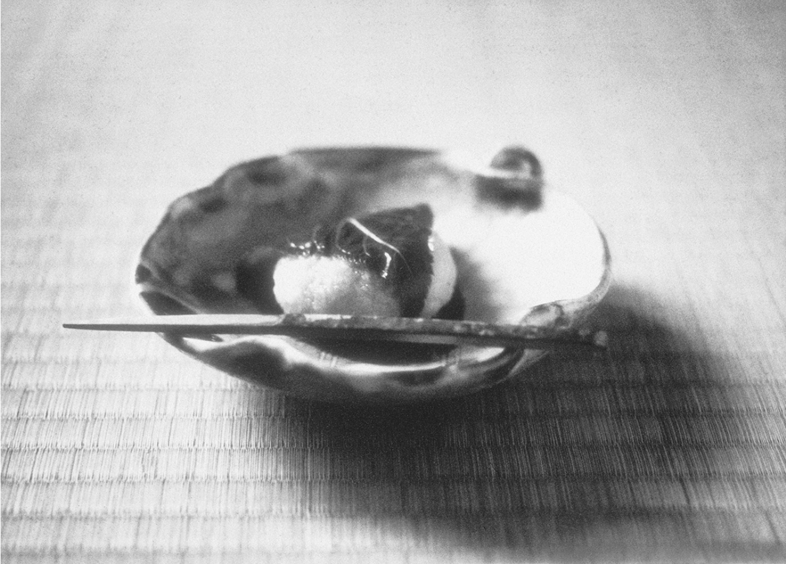

Beauty, Simplicity and the Zen Aesthetic
"The simplicity of the tea-room and its freedom from vulgarity make it truly a sanctuary from the vexations of the outer world. There and there alone one can consecrate himself to undisturbed adoration of the beautiful... Nowadays industrialism is making true refinement more and more difficult all the world over. Do we not need the tea-room more than ever?"

THE WEST: Accused of "wanton waste," cutting flowers in mass quantities for display only to throw them away the next day
THE EAST: The "Flower-Master" is viewed as a "doctor" who twists, bends, and tortures plants into "impossible positions" to prolong their ebbing life
Unlike the formalistic Flower-Masters, the Tea-Master practices the "Flower Sacrifice" with religious economy. They cull only what is necessary, always presenting the flower with its leaves to show the "whole beauty of plant life."
Okakura reconciles the "cruelty" of cutting flowers with the philosophy of Change. Since death is the counterpart of life, the "destruction" of the flower is justified if it joins in a "sacrifice to the beautiful" that ennobles the human spirit.
The flower in the tea-room is an "enthroned prince" meant to tell a story of the seasons. A single lily dripping with dew can make the "irritatingly hot" world feel cool and meaningful.